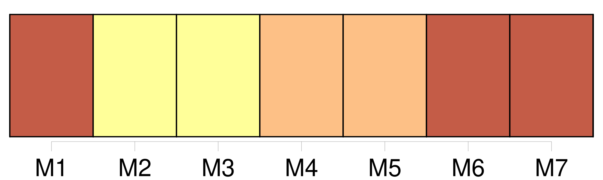
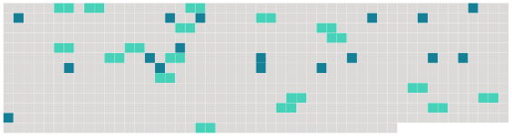

Longueur nb maillons : 35 mentions |
 |
Le mari doit protection à [sa femme] , [la femme] obéissance à son mari. [1 phrases]
[La femme] est obligée d'habiter avec le mari, et de le suivre par-tout où il juge à propos de résider : le mari est obligé de [la] recevoir, et de [lui] fournir tout ce qui est nécessaire pour les besoins de la vie, selon [ses] facultés et [son] état. [1 phrases]
[La femme] ne peut ester en jugement sans l'autorisation de [son] mari, quand même [elle] serait marchande publique, ou non commune, ou séparée de biens. [1 phrases]
L'autorisation du mari n'est pas nécessaire lorsque [la femme] est poursuivie en matière criminelle ou de police. [1 phrases]
[La femme] , même non commune ou séparée de biens, ne peut donner, aliéner, hypothéquer, acquérir, à titre gratuit ou onéreux, sans le concours du mari dans l'acte, ou son consentement par écrit. [1 phrases]
Si le mari refuse d'autoriser [sa femme] à ester en jugement, le juge peut donner l'autorisation. [1 phrases]
Si le mari refuse d'autoriser [sa femme] à passer un acte, [la femme] peut faire citer [son] mari directement devant le tribunal de première instance de l'arrondissement du domicile commun, qui peut donner ou refuser son autorisation, après que le mari aura été entendu ou dûment appelé en la chambre du conseil. [1 phrases]
[La femme] , si [elle] est [marchande publique] , peut, sans l'autorisation de [son] mari, s'obliger pour ce qui concerne [son] négoce ; et, audit cas, [elle] oblige aussi [son] mari, s'il y a communauté entre eux.
[Elle] n'est pas réputée marchande publique, si [elle] ne fait que détailler les marchandises du commerce de [son] mari, mais seulement quand [elle] fait un commerce séparé. [1 phrases]
Lorsque le mari est frappé d'une condamnation emportant peine afflictive ou infamante, encore qu'elle n'ait été prononcée que par contumace, [la femme] , même majeure, ne peut, pendant la durée de la peine, ester en jugement, ni contracter, qu'après s'être fait autoriser par le juge, qui peut, en ce cas, donner l'autorisation, sans que le mari ait été entendu ou appelé. [1 phrases]
Si le mari est interdit ou absent, le juge peut, en connaissance de cause, autoriser [la femme] , soit pour ester en jugement, soit pour contracter. [1 phrases]
Toute autorisation générale, même stipulée par contrat de mariage, n'est valable que quant à l'administration des biens de [la femme] [1 phrases]
Si le mari est mineur, l'autorisation du juge est nécessaire à [la femme] , soit pour ester en jugement, soit pour contracter. [1 phrases]
La nullité fondée sur le défaut d'autorisation ne peut être opposée que par [la femme] , par le mari, ou par leurs héritiers. [1 phrases]
[La femme] peut tester sans l'autorisation de [son] mari. [10 phrases] [La femme] ne peut contracter un nouveau mariage qu'après dix mois révolus depuis la dissolution du mariage précédent. |
 |
Il est possible de télécharger la ressource sur la page Ortolang |
Si vous avez des questions ou vous voyez des erreurs, merci d'envoyer un mail à silvia.federzoni89@gmail.com |